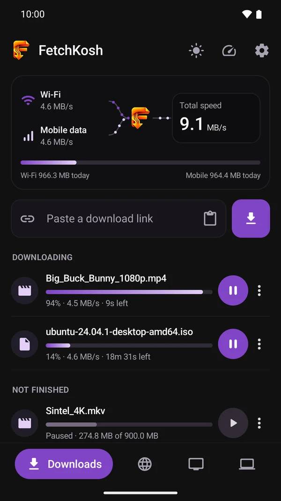
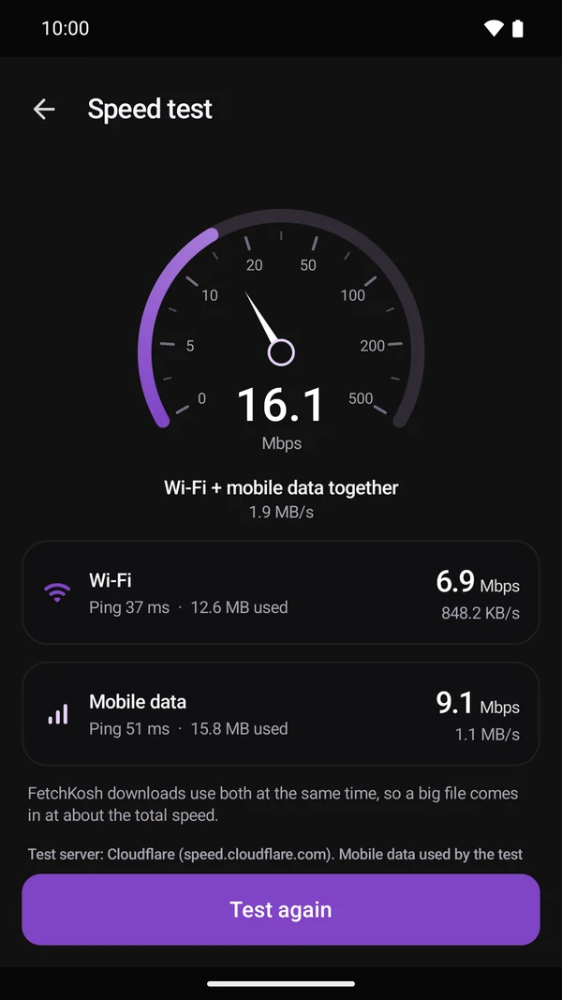
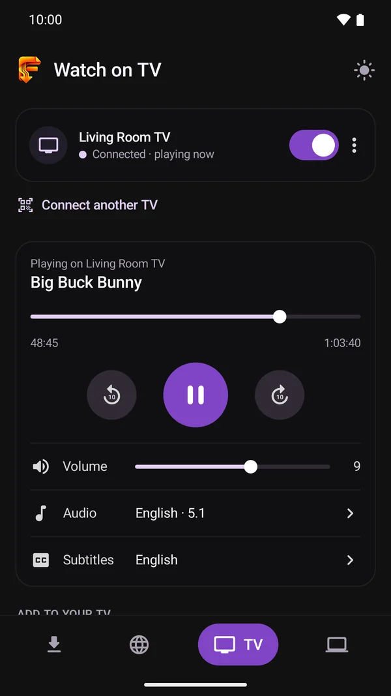
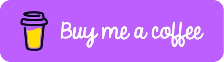

Wi-Fi and mobile data, on the same download.
FetchKosh splits a file into parts and pulls them over both connections at once, so big files finish sooner. It also plays your files on your TV, moves them between your phone and PC, and speeds up Steam and Epic Games downloads.
Free. No account needed. The Android app is in testing on Google Play.
A simulation with example speeds, sped up. Switch mobile data off to see the difference. Your speeds depend on your Wi-Fi and your mobile network.
Your phone has two connections. Use both.
Paste a link, or share one to FetchKosh from any app. The speed card at the top shows what each connection is giving you and the total.
- You set the limit. Give mobile data a daily cap (500 MB to 5 GB), or switch to Wi-Fi only with one tap.
- It keeps going. Downloads carry on with the screen off, and resume after a dropped network or a restart.
- Download tonight. Mark a file for tonight and it runs in your night data window, only while charging if you like.
- Speed test built in. Test Wi-Fi and mobile data, each alone and both together.
- One tap, from anywhere. A Quick Settings tile turns Phone 5G for PC on or off, and a home-screen widget shows your downloads, speed and 5G at a glance.


Watch it on the TV. Your phone is the remote.
Videos, photos and music play on the TV straight from your phone or PC, over your home Wi-Fi. Full quality, instant skipping, and no internet needed.
- Scan to connect. The TV shows a code; scan it with your phone. Nothing to type.
- A real remote. Play, pause, drag to any point, skip 10 seconds, volume, audio track and subtitles.
- Keep a copy. Save shared files on the TV, or on a USB drive plugged into it.


Every connection the PC has, and your phone's 5G too.
FetchKosh for Windows downloads over Ethernet, Wi-Fi and USB tethering together. With the phone app on the same Wi-Fi, your phone's mobile data joins in as one more connection.
- No hotspot to set up. The PC finds your phone by itself. Pair once with a code.
- Send files both ways. From any phone app: Share, then Send to PC. No cable, no mobile data used.
- Send a link. Find a download on your phone and let the PC fetch it.
Your data, your rules.
Mobile data costs money and other people use the internet too. FetchKosh lets you decide how much of each connection it may use, and when.
- A daily data limit. Give your phone 1 GB a day, or any amount. When it's used up, FetchKosh carries on over Wi-Fi, or pauses and picks up again after midnight.
- Speed limits. For one connection or for everything, so others at home can still browse and video-call.
- Scheduled downloads. Pick a time like 2 AM for night data, a time to stop, and whether the PC sleeps or shuts down when it's done. It can even wake the PC from sleep.
- A mini window. A small card on top of your other windows shows each download with a ring, and says Completed when it's in.
Steam and Epic Games downloads, over every connection.
Game Boost hands the pieces of a game to all your connections at once: Ethernet, Wi-Fi and your phone's 5G. Steam or Epic Games still does the downloading and installs the game as usual.
- Switch on Steam or Epic Games in the Game Boost tab. The first time, Windows shows a pop-up called "User Account Control": click Yes.
- Restart the launcher.
- Download your game and keep FetchKosh open while it runs.
Switch it off, or close FetchKosh, and Steam and Epic Games download the normal way again. Not getting more speed? The Game Boost tab checks what's missing.
Speeds measured on our test PC with a Steam download; the race is sped up. Your gain depends on your own connections.
Click download in your browser. FetchKosh takes it from there.
The FetchKosh extension for Chrome, Edge and Brave, Brave and Firefox hands your browser's downloads to the Windows app. It comes with the app, and the app shows you how to add it.
- You know when it starts and when it's done. "Download started" from the browser, then "Download complete" from Windows, with the file's size and folder.
- Sorted for you. Videos, music, archives, programs, documents and pictures each land in their own folder.
- Already have it? FetchKosh tells you before it downloads the same file again.
- Many links at once. Paste a whole list, keep the file types you want, and they download a few at a time.
Three apps that find each other on your Wi-Fi.
- Phone to TVPlay what's on your phone, and control it from the phone.
- PC to TVShare a folder from the Windows app and pick what to watch on the TV.
- Phone and PCFiles and links go both ways, with progress on both screens.
- Phone's 5G to PCThe PC borrows your mobile data for its downloads. Your daily limit still applies.
A TV or PC connects only after you approve it on your phone, and you can remove it at any time. Lending mobile data to a PC works like a hotspot, so check that your plan allows it.
The smaller things.
Pause and resume
Even after closing the app or restarting the phone. Nothing starts over.
A queue you control
Choose how many downloads run at once and drag the rest into order.
Google Drive links
Big shared files download directly, without the "can't scan this file for viruses" page.
How much faster was it?
After a download, see the time saved over Wi-Fi alone and share it as a picture.
Link expired? Keep going
Paste a fresh link, or click the download again in your browser, and FetchKosh continues from where it stopped.
Check the file
See a finished file's SHA-256 and paste the one from the website: FetchKosh tells you if it matches.
Numbered links
In Download many, photo[001-100].jpg adds all 100 links at once.
Opens where you left it
The Windows app comes back at the size and place you left it, maximized too.
Dark and light
One switch at the top of the phone app.
When downloads finish
On Windows, choose to put the PC to sleep or shut it down once everything is in. It stays awake until then.
Drag files to your phone
Drop files from File Explorer onto the Phone page and they go over Wi-Fi, with no mobile data used.
Starts quietly
With Windows, FetchKosh waits in the tray, ready for your browser downloads, without opening a window.
Updates itself
The Windows app gets new versions by itself; the update row under Settings shows how far along it is.
Private
No account or sign-in. Your downloads and settings stay on your devices, and a TV or PC connects only after you approve it.
Set up in two minutes.
The Windows app
Windows 10 or 11.
- Run
FetchKosh-setup.exefrom your Downloads. - Windows protected your PC? Click More info, then Run anyway. New apps without a paid certificate get this once.
- FetchKosh opens and finds your connections by itself.
The browser extension
So your browser's downloads go to FetchKosh.
- In FetchKosh, click Tips, then Add the browser extension.
- It opens your browser's extensions page and shows the folder to choose. Chrome, Edge and Brave take about a minute.
- Pin it next to the address bar. Its button shows whether FetchKosh is ready.
Firefox: add it from Firefox Add-ons in one click.
Add to FirefoxYour phone's 5G for the PC
Optional: one more connection for the PC.
- Get FetchKosh on your phone: join the Android test on Google Play.
- On the phone: PC tab, then switch on Phone 5G for your PC. Phone and PC on the same Wi-Fi.
- The PC shows the phone. Pair once with the code, and set a daily data limit if you like.
Questions, answered.
Common questions
Is FetchKosh free?
Yes. The phone, TV and Windows apps are free, with no account or sign-in.
Will it make my downloads faster?
When you have more than one connection, like Wi-Fi plus your phone's 5G, or a server that slows each connection down. With one connection and a server that doesn't, your line's speed is the limit, and FetchKosh can't go past it.
How much of my mobile data does it use?
As much as you allow. Set a daily data limit, like 1 GB, and FetchKosh stops using the phone's data there and carries on over Wi-Fi. You can also limit its speed, or use Wi-Fi only.
Does Game Boost change my games or launcher?
No. Steam and Epic Games still download and install the game as usual; FetchKosh only fetches the pieces over your connections. Switch it off or close FetchKosh and they download the normal way again.
Is it safe to install?
The Windows installer comes straight from our GitHub releases, and you can check it with the SHA-256 shown under "Get FetchKosh". Windows warns about it only because it isn't signed with a paid certificate yet.
What does FetchKosh know about me?
Nothing it sends anywhere. Your downloads, settings and devices stay on your devices. The details are in the privacy policy.
If something's off
The extension says FetchKosh isn't reachable
Start FetchKosh: it waits in the tray, next to the clock. If it is running, open the extension's button again after a few seconds.
Downloads still go to the browser
Turn off other download managers' browser extensions (like the IDM Integration Module): two extensions fight over the same download. Small files under 1 MB stay in the browser on purpose.
The PC doesn't see my phone
Phone and PC must be on the same Wi-Fi, with Phone 5G for your PC on in the phone's PC tab. If Windows asked about network access, allow it for private networks.
Game Boost isn't faster
Open the Game Boost tab and click Check what's wrong. It looks for the usual causes, like a connection that's switched off or a launcher that wasn't restarted.
Windows says "Windows protected your PC"
Click More info, then Run anyway. It appears once, for new apps without a paid certificate.
Get FetchKosh.
Android phone
Android 9 or newer. In testing on Google Play: join in three steps.
- Join the group kosh-tester with the Google account on your phone.
- Become a tester on Google Play's test page.
- Install FetchKosh from Google Play. It can take a few minutes to show up.
Windows PC
Windows 10 and 11, about 48 MB. It updates itself when a new version is out.
Download for WindowsAndroid TV
Android 9 or newer. After joining the test with the same Google account, open Google Play on the TV and search for FetchKosh.
Then on your phone: FetchKosh, TV tab, Scan the TV's code.
Windows says "Windows protected your PC"? Click More info, then Run anyway. Windows shows this for new apps that aren't signed with a paid certificate yet.
Check your download. The SHA-256 of FetchKosh-setup.exe ():
In PowerShell, Get-FileHash $HOME\Downloads\FetchKosh-setup.exe should show the same.
Like FetchKosh? Buy me a coffee.
FetchKosh is free. If it saves you time, a coffee keeps it going. Thank you!

Scan with your phone's camera.